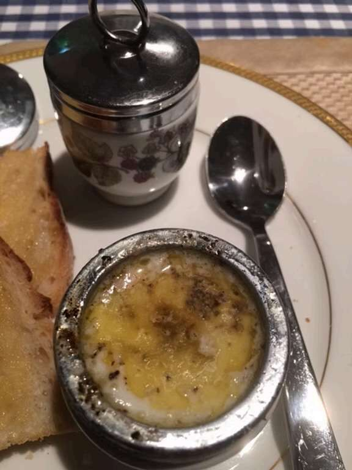

English Coddled Eggs

Coddled Eggs, is a fairly simple breakfast to make.
Ingredients
- Eggs
- Butter
- Pepper & Salt
Instructions
- First, grease up a coddle egg holder with butter.
- Before you put in the egg, put a small pad of butter, along with some pepper and salt on the inside of the base of the coddler.
- Crack the egg, and drop the egg in the coddler. Finally top off the egg with another small pad of butter, and some pepper and salt.
- Close the coddler with the top. Place the coddlers in boiling water, and cook for 5-6 minutes.
- Once you've cooked the coddled eggs pull them from the boiling water and place on a plate, along with French toast or an English muffins. I like to slice the bread so I can dip them in the coddled eggs. Mmmmm.